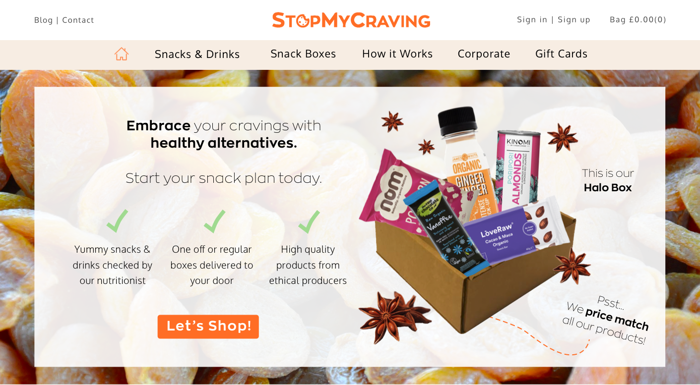
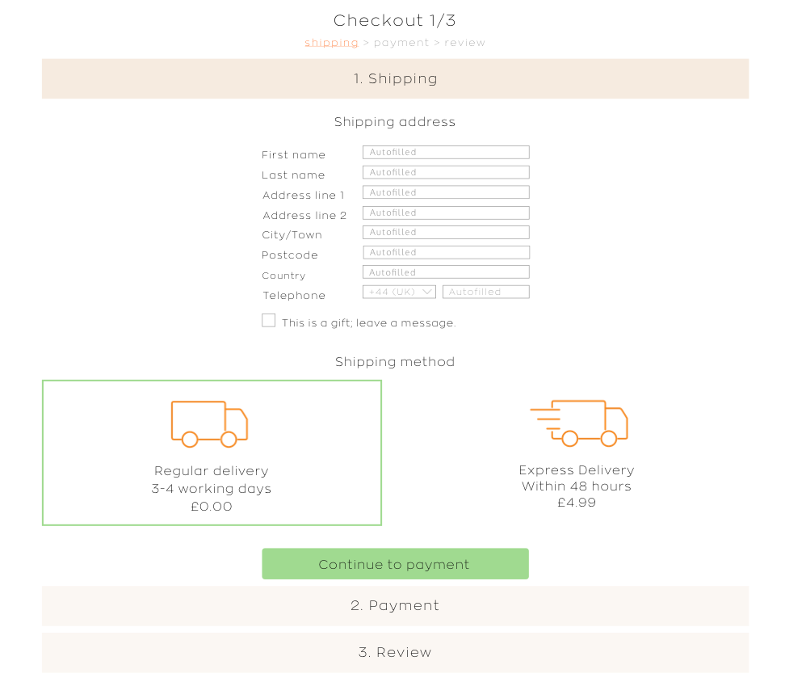
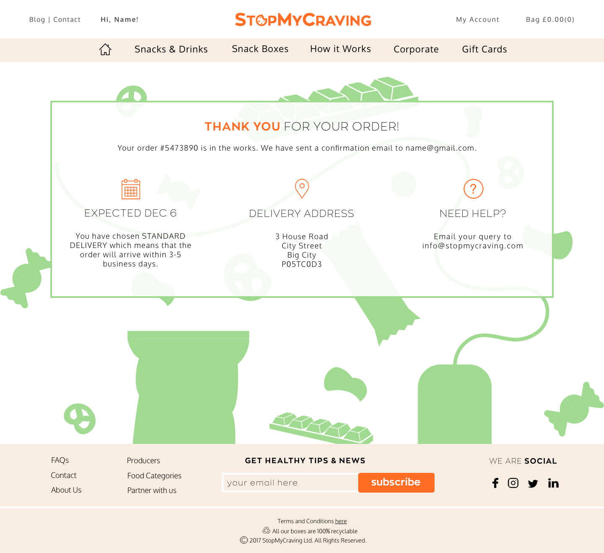

StopMyCraving: e-commerce website for a food tech startup.
Client
StopMyCraving is a food tech company that works with independent producers. It was judged a UK Top 20 startup last year, with a place on Europe's Number 1 accelerator programme this year. Their online store enables users to search for nutritious snacks and drinks according to their lifestyle goals, dietary needs, and cravings.
Brief
I have been working closely with the developer, CEO, and nutritionist to re-design and re-brand the entire online store, since October 2017.
Deliverables
Responsive website wireframes for all pages including e-commerce user journey and blog, graphics to illustrate products and features to consumers, visual marketing content, interactive prototype for testing further iterations, documented research into user behaviours (testing and interviews, focus groups, surveys).
Process
Interviews and user tests early on helped to establish the key changes that were needed. Via Skype, I asked 9 users to try using the old e-commerce platform and compare it with competitors' platforms.
Changes were prototyped and I consulted with the developers at pertinent points while iteratively adding more details to the wireframes and facilitating further focus groups.
Outcomes
Since I joined StopMyCraving in October as a freelancer, they have been accepted onto a major accelerator programme in Europe. The new website is a vital step forward in upscaling.
I'm using: Skype (user interviews), pencil and paper for rapid prototyping, Sketch app, Sketch up (3D modelling), Photoshop, Illustrator, inVision, Zeplin.